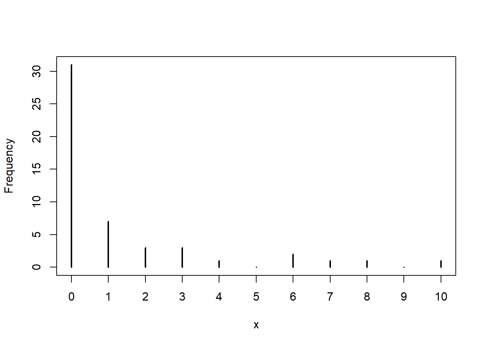

nll = function(par,y,x){
a = par[1]
b = par[2]
sd = par[3]
# this calculates the mean y for a given value of x:
#the deterministic function
mu = a+b*x
# this calculates the likelihood of the function given the probability
# distribution, the data and mu and sd
nll = -sum(dnorm(y,mean=mu,sd=sd,log=T))
return(nll)
}Lab 6 Fitting models to data
1 Learning goals
You will learn how to:
Program the likelihood function of a model.
Estimate the parameters of a model through maximum likelihood, including models with continuous and categorical covariates.
Estimate the confidence intervals of the model parameters through profiling and the quadratic approximation.
Estimate parameters in a Bayesian framework and how parameter uncertainty can be assessed
In case of time constraints, focus on sections 2-5. If you want something challenging do 6,7 and 8 as well.
2 Fitting models to data
Fitting a model to data through likelihood requires that you take five steps:
- Specify how the dependent variable depends on the independent variable, i.e. specify a function that describes how the mean of y depends on the value of x.
- Specify a probability distribution to describe the deviations of the observations from the mean
- Specify a function that calculate the negative log likelihood (NLL) based on the data and the parameter values.
- Choose the parameters of the deterministic model and the probability model such that the negative log likelihood is lowest.
- Compare the likelihood of alternative models (change the deterministic function or the stochastic function) and compare with AIC(c) or BIC which model is most parsimonious.
For example to calculate the NLL of a linear model and a normal distribution the following function works:
Notice that the function takes three arguments: a vector with parameters, a vector with y values and a vector with x values. Inside the vector par, three values are stored: a,b and sd. Next, the mean given x is calculated with mu=a+b*x. The nll returns the Negative LogLikelihood of the data (y) given a normal distribution with mean mu (vector!) and a standard deviation sd. The log=T returns the log of the probability densities.
Next we call an optimisation function to find the maximum likelihood estimate
par=c(a=1,b=1,c=1) # initial parameters
# y represents the data, x the independent variable
opt1 = optim(par=par,nll,x=x,y=y,hessian=TRUE)The optimization result is a list with elements:
the best-fit parameters (
opt1$par, with parameter names because we named the elements of the starting vector—see how useful this is?);}the minimum negative log-likelihood (
opt1$value);information on the number of function evaluations (
opt1$counts; thegradientpart isNAbecause we didn’t specify a function to calculate the derivatives (and the Nelder-Mead algorithm wouldn’t have used them anyway)information on whether the algorithm thinks it found a good answer
opt1$convergence, which is zero ifRthinks everything worked and uses various numeric codes (see?optimfor details) if something goes wrong;opt1$messagewhich may give further information about the when the fit converged or how it failed to converge;because we set
hessian=TRUE, we also getopt1$hessian, which gives the (finite difference approximation of) the second derivatives evaluated at the MLE.
It can also be done through mle2
nll.mle = function(a,b,sd){
# this calculates the mean y for a given value of x: the deterministic function
mu = a+b*x
# this calculates the likelihood of the function given the probability
# distribution, the data and mu and sd
nll = -sum(dnorm(y,mean=mu,sd=sd,log=T))
return(nll)
}# the data should be supplied through data and the parameters through list().
mle2.1 = mle2(nll.mle,start=list(a=1,b=1,sd=1),data=data.frame(x,y))
summary(mle2.1)3 Fitting parameters of made-up data
The simplest thing to do to convince yourself that your attempts to estimate parameters are working is to simulate the ‘’data’’ yourself and see if you get close to the right answers back. Set the random seed to 1001 so we get identical answers across r sessions.
3.1 Finding the maximum likelihood estimate of the paramaters
Exercise 6. 3.1
Take the steps below
Generate 50 values from a negative binomial (
rnbinom) with \(\mu=1\), \(k=0.4\). Save the values in variables in case we want to use them again later.Plot the numbers in a frequency diagram
Next, define the negative log-likelihood function for a simple draw from a negative binomial distribution: the first parameter,
par, will be the vector of parameters, and the second parameter,dat, will be the vector with simulated values.Calculate the negative log-likelihood of the data for the parameter values with which you generated the numbers. Combine these parameter values into the vector
parwithc()to pass them to the negative log-likelihood function. Naming the elements in the parameter vector is optional but can help avoid mistakes if the number o fparameters is large (e.g.par = c(mu = 1,k = 2)).Calculate the NLL of parameter values that are far from the values that were used to generate the data (\(\mu=10\), \(k=10\))
Calculate the maximum likelihood estimate (MLE)? Use
optimwith the default options (Nelder-Mead simplex method) and the method-of-moments estimates as the starting estimates (par):opt1 = optim(fn=NLLfun1,par=c(mu=mu.mom,k=k.mom),hessian=TRUE)What is the difference in NLL between the MLE estimates and the NLL derived at 5?
The Likelihood Ratio Test would say, however, that the difference in likelihoods would have to be greater than \(\chi^2_2(0.95)/2\) (two degrees of freedom because we are allowing both \(\mu\) and \(k\) to change). This can be done through ldiff=nll.true-nll.mom and qchisq(0.95,df=2)/2. So — better, but not significantly better at \(p=0.05\). pchisq(2*ldiff,df=2,lower.tail=FALSE) would tell us the exact \(p\)-value if we wanted to know.)

4 Maximum likelihood and continuous covariates
The following exercise has the purpose to learn you how to fit a model to data when we have a single covariate.
Exercise 6. 4.1
Take the second dataset (shapes2.csv from shapes.xlsx), use a michaelis-menten as deterministic function, and a normal distribution as stochastic model. Tweak the function in the first three grey boxes (above) such that it accomodates the michaelise menten and the normal distribution.
hint: In a previous exercise you have eyeballed the parameter values of the functions, you can use these as starting values.
hint: In case you get convergence problems, further adapt your starting values, or choose a different optimizer. For example Nelder-Mead is a robust one, e.g.
method = "Nelder-Mead".Change the determinstic function for a possible alternative determinstic function, and fit this new model to the data. Remember that in Lab 3 you have proposed multiple deterministic functions for this dataset.
Compare the likelihoods of the data given both models
Apply model selection criteria and conclude which model fits that data best.
Does the model makes sense from a biological perspective?
5 Maximum likelihood with continous and categorical predictors
Sometimes you want to fit the same model to different groups (males/females, treatment/control etc.). The easiest way is to separately fit the model to the subsets, but this makes it very difficult to assess whether the fitted parameters for both groups are comparable. A more elegant method is explained below.
We use the fifth dataset of the six datasets you have worked with earlier on (shapes5.csv or the fifth sheet from shapes.xlsx). Assume that the function was generated by a decreasing exponential function \(ae^{(-bx)}\) and you want to the values of \(a\) and \(b\). The dataset has three columns that are relevant: the independent variable \(x\), the dependent variable \(y\), and a dummy variable \(group\) indicating to which group the observation belongs to. We want to test whether we can justify a different \(a\) and \(b\) for the two groups.
This is how the NLL function would look like assuming no grouping:
read.csv("shapes5.csv") # and select fifth dataset
# test dataset five for differences between groups
nll0 = function(par,dat){
a = par[1]
b = par[2]
ymean = a*exp(-b*dat$x)
nll = -sum(dpois(dat$y,lambda=ymean,log=T))
return(nll)
}
par=c(4,0.2)
opt1 = optim(par=par,fn=nll0,dat=dat)Exercise 6. 5.1
Fit the above model to the data without considering differences between groups in \(a\) and \(b\).
Adjust the likelihood function such that it can accomodate for different values of \(b\) depending on the group an observation belong to.
Use the following pseudocode to achieve this and/or check page 305 for in inspiration or go back to Lab 1 section 11.1.2. a. Adapt the likelihood function such that the parameter b depends on the group. b. Adjust the starting values so it contains multiple starting values for b
Estimate the parameters \(a\) and \(b\) when letting \(b\) depend on the group. Compare the negative loglikelihood of this model with the model fitted in question 1. Which has a better fit?
Apply model selection techniques (Likelihood ratio test, AIC or BIC) to select the most parsimonious model. Are the models nested? Which model is preferred?
Exercise 6. 5.2
To practice model fitting a little bit more, you could repeat the above procedure for the other 4 datasets from shapes.xlsx.
Pick a dataset, go back to the Lab 3 Question 2.1 and Lab 4 Question 2.1 and list the stochastic model and the deterministic function and the eyeballed parameters that you thought were appropriate for this dataset. Next write a negative loglikelihood function, and use mle2 or optim to obtain the maximum likelihood estimates for the parameters.
If you have practised sufficiently, you can move on with the advanced topics below.
6 Advanced topics
6.1 Likelihood surface
To find the likelihood surface follow the steps below (background information can be found in Bolker Ch. 6). This exercise continues on exercise #3.1 (Lab 3) where you used the negative binomial to generate 50 numbers and fitted back the parameters.
Exercise 6. 6.1
For the likelihood surface:
Set up vectors of \(\mu\) and \(k\) values. Let’s try \(\mu\) from 0.4 to 3 in steps of 0.05 and \(k\) from 0.01 to 0.7 in steps of 0.01.
Set up a matrix to hold the results, The matrix for the results will have rows corresponding to \(\mu\) and columns corresponding to \(k\):
Run
forloops to calculate and store the values. Use afornested in another oneDrawing a contour using the function ‘contour’. Change the argument
nlevelsto 100 to get a better view of the likelihood surfaceAdd the MLE estimates in the contour plot (use ‘points’). Additionally, add the parameter values that were used to generate the data, and the parameter values that were obtained with the method of moments.
7 Hints for choosing deterministic functions and stochastic functions
- Deterministic functions
- dataset 1
light response curve. There are a number of options of functions to choose from, depending on the level of sophistication:\(\frac{ax}{(b+x)}\), \(a(1-e^{(-bx)})\), \(\frac{1}{2\theta}(\alpha I+p_{max}-\sqrt(\alpha I+p_{max})^2-4\theta I p_{max})\) see page 98. A parameter d can be added in all cases to shift the curve up or down. The y represents net photosynthesis \(\mu mol CO_{2}/m^2s\)
- dataset 2The dataset describes a functional responses. Bolker mentions four of those
\(\min(ax,s)\) \(\frac{ax}{(b+x)}\), \(\frac{ax^2}{(b^2+x^2)}\),\(\frac{ax^2}{(b+cx+x^2)}\)
The y is measured in grams prey eaten per unit time.
- dataset 3Allometric relationships generally have the form \(ax^b\). The y represent the total number of cones produced.
- dataset 4This could be logistic growth \(n(t)=\frac{K}{1+(\frac{K}{n_0})e^{-rt}}\) or the gompertz function \(f(x)=e^{-ae^{-bx}}\). The y represent the population size (numbers).
- dataset 5What about a negative exponential? \(ae{-bx}\) or a power function \(ax^b\). The y represent a number per unit area.
- dataset 6Species reponse curves are curves that describe the probability of presence as a function of some factor. A good candidate good be a unimodel response curve. You could take the equation of the normal distribution without the scaling constant: e.g. \(a e^{\frac{-(x-\mu)^2}{2\sigma^2}}\). The y represent presence or absence of the species (no units).
Stochastic functions/Probability distributions
dataset 1 y represents real numbers and both positive and negative numbers occur. This implies that we should choose a continuous probability distribution. In addition, the numbers seems unbound. Within the family of continuous probability distributions, the normal seems a good candidate distribution because this one runs from -\(\inf\) to +\(\inf\). In contrast the Gamma and the Lognormal only can take positive numbers, so these distributions cannot handle the negative numbers. In addition, the beta distribution is not a good candidate because it runs from 0-1.
dataset 2 y represents real numbers and only positive numbers occur. The data represents a functional response (intake rate of the predator), and it is likely that you can only measure positive numbers (number of prey items per unit of time). This implies that we should choose a continuous probability distribution. Within the family of continuous probability distributions, the Gamma and the Lognormal could be taken as candidate distributions because they can only take positive numbers (beware that the Gamma cannot take 0). However, you could try to use a normal as well.
dataset 3 y seems represents counts (this is the cone dataset that is introduced in ch. 6.). Given that it contains counts we can pick a distribution from the family of discrete distributions. The Poisson and the Negative Binomial could be good candidates to describe this type of data.
dataset 4 y represents population size over time. From looking at the data, they seems to represent counts. Given that it contains counts we can pick a distribution from the family of discrete distributions. The Poisson and the Negative Binomial could be good candidates to describe this type of data.
dataset 5 No information is given on y. The data clearly seems to represent counts. Thus the same reasoning applies here as to the two previous datasets.
dataset 6 The data (y) represents species occurences (presence/absence). The binomial model would be a good model to predict the probability of presence.